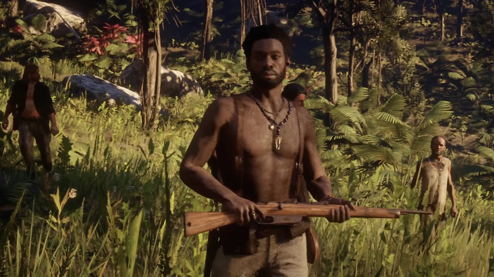
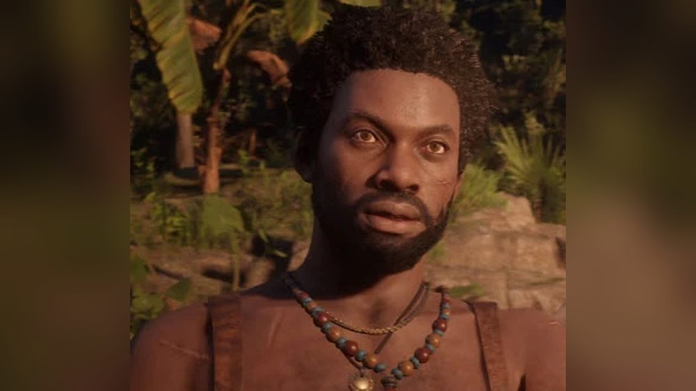

Personnage · Guarma
Hercule Fontaine
Hercule Fontaine est un contrebandier à la tête d'une bande de rebelles qui combat Alberto Fussar, le colonel qui gouverne l'île caribéenne de Guarma, dans Red Dead Redemption 2 (2018), dont l'action se déroule en 1899. Au chapitre 5, son embuscade libère Dutch van der Linde, Arthur Morgan, Micah Bell et Bill Williamson, naufragés sur l'île et emmenés enchaînés par les soldats de Fussar ; Javier Escuella est capturé pendant la fuite. Hercule leur promet un bateau en échange de leur aide. Fussar fait venir un navire de guerre de Cuba, qu'Arthur coule avec le canon d'Hercule au fort de Cinco Torres. Hercule participe ensuite à l'attaque d'Aguasdulces, où Arthur tue Fussar, et la bande prend la mer sur le navire qu'il lui a trouvé. Le jeu ne montre pas ce qu'il devient.
Il a la voix de Guyviaud Joseph.
- Nom
- Hercule Fontaine
- Naissance
- Non précisée dans le jeu
- Statut
- En vie quand la bande quitte Guarma (1899) ; la suite n'est pas montrée
- Nationalité
- Non précisée dans le jeu ; il dit ne pas être de Guarma et que ses hommes rentreront sans doute en Haïti. Haïtienne selon le Red Dead Wiki
- Activité
- Contrebandier ; chef d'une bande de rebelles opposée à Fussar
- Base
- Le vieux fort de Cinco Torres, à Guarma
- Ennemis
- Alberto Fussar, son contremaître Levi Simon et leurs soldats
- Jeux
- Red Dead Redemption 2
- Voix
- Guyviaud Joseph
Biographie
Origines
Red Dead Redemption 2 ne donne ni date ni lieu de naissance pour Hercule Fontaine, et ne dit rien de sa vie avant 1899. Quand il rencontre la bande, il précise qu'il n'est pas de Guarma. Il se présente comme un homme qui fait entrer et sortir des marchandises des îles à l'insu du colonel Alberto Fussar, le gouverneur de Guarma. Ses hommes et lui se cachent dans le vieux fort espagnol de Cinco Torres lorsqu'ils séjournent sur l'île. Il garde aussi une réserve d'armes dans un vieux bâtiment de la jungle, que le Red Dead Wiki appelle El Nido et présente comme un avant-poste de rebelles qui lui sont fidèles. Toujours selon le wiki, Hercule ravitaillait déjà le soulèvement contre Fussar avant 1899, et dirige son mouvement depuis Cinco Torres.
Sur l'île, il travaille avec le rebelle Leon Fuentes et avec Baptiste, qui explique à Arthur Morgan travailler avec Hercule ; Leon présente Baptiste comme l'un des hommes d'Hercule. Les pages du Red Dead Wiki ne s'accordent pas sur la place de Leon : celle des rebelles de Guarma fait d'Hercule et de lui les deux chefs du groupe, celle de Leon le range parmi les membres de la faction rebelle dirigée par Hercule. Le jeu ne précise jamais la nationalité d'Hercule. Le Red Dead Wiki le dit haïtien.
Red Dead Redemption 2 (1899)
Chapitre 5 : Guarma
À la fin du chapitre 4, après l'échec du braquage de la banque de Saint-Denis, Dutch van der Linde, Arthur, Micah Bell, Bill Williamson et Javier Escuella s'enfuient sur un navire qui sombre dans une tempête. Ils échouent sur Guarma. Dans "Welcome to the New World", des soldats menés par Levi Simon arrêtent les cinq naufragés sur la plage et les enchaînent. En chemin, la colonne rejoint un groupe de rebelles de l'île déjà capturés, dont Leon Fuentes. Un garde explique à Dutch qu'ils sont coupables d'insurrection, puis fait taire Leon, qui se moque du mot.
Depuis la jungle, les rebelles d'Hercule ouvrent le feu sur l'escorte. Quand un soldat tombe à côté de lui, Arthur ramasse le revolver du mort et aide les tireurs cachés à venir à bout de l'escorte, pendant que les autres se dégagent de leurs chaînes. Quand des renforts ennemis surgissent, Hercule ordonne à tout le monde de le suivre sans attendre. Javier, touché à la jambe pendant la fuite, est capturé, et les autres doivent l'abandonner. Hercule conduit Dutch, Arthur, Micah et Bill à travers la jungle jusqu'à un vieux bâtiment où il a caché des armes. Ils prennent des fusils dans les caisses et affrontent les soldats lancés à leurs trousses. En plein combat, Arthur le remercie de les avoir tirés d'affaire et fait une remarque sur l'île ; Hercule répond qu'elle n'est pas à lui. Les soldats finissent par battre en retraite.
Une fois à l'abri, Hercule demande aux naufragés ce qu'ils font à Guarma. Dutch répond qu'ils fuient quelque chose, et Hercule se présente. Dutch donne son nom, puis ceux de Micah, Bill et Arthur. Hercule les prévient que Fussar fera tout pour les retrouver. Pour Leon, Fussar est un tyran mû par le pouvoir et la cupidité, et les ouvriers n'existent que pour s'épuiser à la tâche jusqu'à en mourir afin de l'enrichir. Hercule ajoute que Leon voudrait voir le peuple lui tenir tête, mais que la plupart ont trop peur. D'un promontoire, Hercule montre au groupe Aguasdulces, le domaine de Fussar, où l'on traite la canne coupée dans les plantations. Leon explique que ces ouvriers, amenés d'autres îles, ne valent guère mieux que des esclaves, et qu'un groupe d'entre eux s'est enfui dans la jungle la veille ; Hercule précise que les hommes de Fussar sont maintenant à leur recherche.
Dutch lui demande s'ils peuvent lui faire confiance. Hercule répond qu'ils n'ont guère le choix, puisqu'il est le seul à pouvoir leur trouver un bateau. En échange, il leur demande d'aider Leon à retrouver les ouvriers en fuite, puis de le rejoindre au fort de Cinco Torres. Dutch promet de faire tout leur possible si Hercule les aide à récupérer Javier et à quitter l'île. Hercule leur indique que Javier, s'il est encore en vie, sera détenu au domaine de Fussar, et qu'une grotte cachée sous les falaises y mène tout droit. Il conduit les quatre hommes jusqu'à un endroit où se reposer, près de La Capilla, puis prend congé et s'en va avec Leon.
Hercule n'apparaît pas dans les deux missions suivantes, mais il y est question de lui. Dans "Savagery Unleashed", Arthur et Leon sauvent de la potence plusieurs des ouvriers en fuite. Baptiste apprend alors à Arthur qu'Hercule est en train de trouver un bateau pour emmener la bande, et qu'il faut le rejoindre à Cinco Torres, puis lui remet un peu d'argent (voir Relations). Dans "A Kind and Benevolent Despot", Dutch a trouvé la grotte dont Hercule leur a parlé et paie une vieille femme, Gloria, pour les y guider. En chemin, Arthur se demande si Hercule ne se sert pas simplement d'eux. Dutch en est à peu près sûr, mais voit en lui leur meilleure chance de quitter l'île. Une fois Javier libéré, Dutch l'emmène et donne rendez-vous à Arthur au fort d'Hercule.
Dans "Hell Hath No Fury", Arthur arrive à Cinco Torres alors que Dutch se dispute avec Hercule au sujet du bateau promis. Hercule leur apprend que Fussar sait désormais qui ils sont et quelle prime pèse sur leurs têtes. S'ils parviennent à le faire taire, explique-t-il, il pourra les faire partir avant que quiconque n'ait le temps d'arriver d'Amérique. Dutch réclame son bateau. Hercule répond qu'ils sont tombés en pleine guerre : Fussar a fait venir la marine de Cuba, et aucun bateau ne peut partir pour l'instant. Un rebelle l'appelle alors d'urgence, en français. Du haut du fort, le groupe voit un navire de guerre s'approcher de la côte. Hercule leur laisse le choix entre se battre et fuir ; Dutch choisit le combat, et Hercule va préparer le canon du fort.
Des soldats débarquent sur la plage, en contrebas, et la bande les prend pour cible depuis les remparts. Micah proteste que ce combat n'est pas le leur ; Hercule lui demande s'il veut quitter l'île, oui ou non, et Micah s'écrie qu'Hercule se sert d'eux. Bill lui reproche à grands cris le bateau promis, et Hercule réplique qu'il s'en occupe, mais qu'ils sont pris au piège. Hercule demande un coup de main à Arthur, et tous deux traînent le lourd canon jusqu'à son emplacement. Quand les soldats atteignent le fort, Micah et Bill veillent sur le canon depuis le toit, tandis qu'Arthur, Dutch et Hercule descendent dégager la plage sous les tirs du navire. Hercule demande à Arthur de prendre le fusil à pompe. Un obus du navire tombe au milieu de ses propres soldats. Des embarcations arrivent des deux côtés ; Arthur confie un secteur à Dutch, et Hercule le suit.
La plage dégagée, Hercule estime qu'il faut s'occuper du navire de guerre et que deux d'entre eux doivent aller servir le canon. Dutch se propose pour tenir la plage encore un moment, et Arthur remonte avec Hercule. En chemin, Arthur demande combien d'hommes a Fussar ; Hercule répond que le nombre ne compte pas, puisque Fussar a toujours de quoi en payer d'autres. Il abat un soldat qui fonçait sur Dutch. Sur le toit, Arthur fait feu pendant qu'Hercule recharge et lui conseille de viser la ligne de flottaison. Le navire coule. Dutch salue la précision des tirs. Hercule prévient que les soldats reviendront, mais annonce qu'il a trouvé un bateau et que son capitaine devrait arriver au quai d'un instant à l'autre. Dutch envoie Micah à la rencontre du capitaine, demande à Bill de l'aider à aller chercher Javier, et dit à Hercule qu'il a été ravi de faire sa connaissance.
Au début de "Paradise Mercifully Departed" (à Manicato, d'après la page de la mission), Micah revient de reconnaissance : Fussar sait qui ils sont, ses hommes détiennent le capitaine, et la bande est cernée de pièces d'artillerie qui cribleraient d'obus tout bateau tentant de prendre la mer. Quand Dutch se tourne vers lui, Hercule déclare qu'il combattra Fussar chaque jour qu'il pourra. Bill reste à bord pour garder Javier, et Dutch annonce à Hercule que les autres le suivront.
Hercule conduit Dutch, Arthur et Micah à travers un territoire tenu par les soldats de Fussar. Arthur et Micah éliminent les deux gardes de la première position d'artillerie, posent de la dynamite et la font sauter. Hercule signale un soldat posté sur un toit, mène le groupe jusqu'à une seconde batterie et repère d'autres hommes de Fussar qui arrivent à travers champs pendant que Micah installe les charges. Une fois les canons détruits, Micah localise le capitaine dans un bâtiment bleu (la page de la mission situe l'action à Aguasdulces), et Dutch y envoie Arthur pendant que les autres tiennent les abords. Hercule n'apparaît pas dans la cabane, où Levi Simon, puis Fussar, tiennent Arthur et Dutch en joue. Arthur envoie du pied au capitaine un fusil qui traîne au sol ; le capitaine abat Simon, et Fussar s'enfuit.
Pendant la course vers le navire, Hercule avoue qu'il n'a pas vu où Fussar est passé. Des renforts arrivent, et près du port, Hercule repère Fussar au sommet d'une tour, où il charge un canon et ouvre le feu sur eux. Hercule dit à Arthur qu'il faut l'abattre et lui désigne un autre canon, un peu plus loin sur la gauche. Selon le Red Dead Wiki, Hercule attire sur lui les tirs de Fussar pour permettre à Arthur de l'atteindre. Arthur tire sur la tour et en détruit le sommet, tuant Fussar. La page de la mission précise que le joueur peut aussi tuer Fussar d'un coup de feu.
Sur le quai, le capitaine, blessé, assure qu'il peut mener le navire. Dutch demande à Hercule si ses hommes et lui s'en sortiront. Hercule répond que les rebelles feront comme la bande : ils disparaîtront, sans doute pour repartir en Haïti, et seront partis avant le matin. Dutch le remercie. Les cinq membres de la bande embarquent avec le capitaine et mettent le cap sur l'Amérique. C'est la dernière apparition d'Hercule.
Après Guarma
Le jeu ne montre pas ce que devient Hercule après le départ de la bande. Aucune mission ultérieure ne parle de lui. Un numéro suivant des journaux (Blackwater Ledger n° 68, New Hanover Gazette n° 33, Saint Denis Times n° 49) annonce l'assassinat de Fussar dans l'article "Leader of Guarma Assassinated". Le meurtre y est d'abord imputé à une révolte des ouvriers des plantations, puis à plusieurs hommes blancs, certains accusant aussi des insurgés socialistes ; aucun chef rebelle n'est nommé. Dans les journaux de l'épilogue (Blackwater Ledger n° 74, New Hanover Gazette n° 39, Saint Denis Times n° 55), l'article "Unrest in the Tropics" rapporte que des banques américaines ont pris le contrôle de l'industrie sucrière de Guarma après la mort de Fussar, sans un mot sur les rebelles. Le Red Dead Wiki relève que l'on ignore ce qu'il reste de la rébellion sur l'île en 1907.
Personnalité
Les descriptions de personnages publiées par Rockstar en septembre 2018 portent sur le gang Van der Linde et ne le concernent pas, et aucun guide officiel consulté ne le décrit. Son caractère ne se lit donc que dans ce qu'il dit et fait au fil de ses trois missions : ses actes sont racontés dans la biographie, et les répliques citées ci-dessous portent sur son métier, sa lutte contre Fussar et ses projets.
Dans ses propres mots
- "I am not from here. I bring things in and off the islands... behind Colonel Fussar's back." (je ne suis pas d'ici ; je fais entrer et sortir des marchandises des îles… dans le dos du colonel Fussar), à Dutch, dans "Welcome to the New World".
- "I don't see you have any choice. I am the only one who can arrange a boat for you. But... I need something in return." (je ne vois pas bien quel choix vous avez ; je suis le seul à pouvoir vous trouver un bateau, mais… j'attends quelque chose en retour), quand Dutch lui demande s'il peut lui faire confiance.
- "That is the problem. It doesn't matter how many we kill. He will have the money to get more." (c'est bien le problème : peu importe combien on en tue, il aura l'argent pour en payer d'autres), à Arthur, qui demande combien d'hommes a Fussar, dans "Hell Hath No Fury".
- "Oh, I'll fight Alberto Fussar every day I can." (oh, je combattrai Alberto Fussar tant que je le pourrai), quand Dutch se tourne vers lui après le rapport de Micah, dans "Paradise Mercifully Departed".
- "We'll be like you. We'll disappear probably... back to Haiti. Believe me, we'll be long gone by morning." (on fera comme vous : on va disparaître, sans doute… retourner en Haïti ; croyez-moi, demain matin on sera loin), quand Dutch lui demande s'il va s'en sortir, sur le port.
Noms
Il se présente à Dutch sous le nom d'Hercule Fontaine après l'évasion. La bande comme les rebelles l'appellent Hercule. Dans "A Kind and Benevolent Despot", Arthur ne le désigne que par son prénom quand il demande à Dutch si Hercule se sert d'eux (voir Relations). Le Red Dead Wiki ne lui connaît aucun surnom.
Apparence
C'est un homme noir aux cheveux courts, épais et frisés, à la barbe noire fournie, avec une petite cicatrice sur la joue gauche. Il porte au cou un collier de perles de couleur et de fins cordons, dont l'un retient un pendentif.
Relations

Dutch van der Linde
Dutch conclut le marché avec lui après l'évasion (voir la biographie). Plus tard, il confie à Arthur qu'Hercule se sert d'eux, "Almost certainly" (très certainement), mais qu'il reste leur meilleure chance de quitter l'île.
À Cinco Torres, Dutch rappelle à Hercule que la bande a fait ce qu'il demandait et lui réclame le bateau promis (voir la biographie). Une fois le navire de guerre coulé, il lui lance : "Hercule... it was a great pleasure to make your acquaintance." (Hercule… ce fut un grand plaisir de faire votre connaissance). Avant l'attaque des batteries, il lui laisse la tête du groupe ("Hercule, we follow you.", Hercule, on vous suit), et sur le port il lui demande s'il va s'en sortir, puis le remercie.

Arthur Morgan
Dans le vieux bâtiment où ils repoussent les soldats, Arthur remercie Hercule de les avoir tirés de là et lâche : "Nice island you got here." (jolie île que vous avez là). Hercule répond : "It's not my island." (ce n'est pas mon île). Dans "A Kind and Benevolent Despot", Arthur demande à Dutch : "Are you sure this Hercule feller ain't just using us?" (t'es sûr que ce type, Hercule, se sert pas juste de nous ?).
À Cinco Torres, les deux hommes se battent côte à côte (voir la biographie). Sur la plage, quand Arthur envoie Dutch couvrir le flanc gauche, Hercule annonce qu'il le suit. Sur le port, Hercule indique à Arthur un second canon pour abattre la tour de Fussar.

Micah Bell
Pendant la bataille de Cinco Torres, Micah s'emporte : "Why the hell are we doing this? This ain't our fight!" (qu'est-ce qu'on fout là ? c'est pas notre combat !). Hercule réplique : "Do you want to get off this island or not?" (vous voulez quitter cette île, oui ou non ?), et Micah crie : "He's using us!" (il se sert de nous !). Micah garde ensuite le canon avec Bill, puis accompagne Hercule, Dutch et Arthur à l'assaut des batteries, qu'il piège à la dynamite (voir la biographie).

Bill Williamson
Quand les soldats se rapprochent du fort, Bill hurle : "You said you were getting us a goddamn boat, Hercule!" (vous deviez nous trouver un foutu bateau, Hercule !). Hercule rétorque : "I am! What do you want me to do? We are trapped up here!" (c'est ce que je fais ! qu'est-ce que vous voulez que j'y fasse ? on est coincés là-haut !). Bill reste sur le toit pour garder le canon, puis sur le navire pour veiller sur Javier pendant que les autres attaquent les batteries (voir la biographie).

Javier Escuella
Javier est touché à la jambe et capturé alors que le groupe, guidé par Hercule, fuit les renforts arrivés après l'embuscade. Hercule indique à Dutch où Javier sera détenu et comment l'atteindre (voir la biographie). Javier quitte Guarma sur le même navire que les autres.

Alberto Fussar
Le colonel qui gouverne Guarma, et que combattent les rebelles d'Hercule. Celui-ci l'appelle le colonel Fussar et désigne Aguasdulces comme "Fussar's compound" (le domaine de Fussar). Arthur tue Fussar d'un coup de canon sur la tour qu'Hercule lui a désignée (voir la biographie). Les deux hommes ne s'adressent jamais la parole à l'écran.
Leon Fuentes
Rebelle enchaîné avec les naufragés et libéré lors de l'embuscade. Hercule demande à la bande d'aider Leon à retrouver un groupe d'ouvriers en fuite, et Arthur se bat ensuite à ses côtés dans "Savagery Unleashed" (voir la biographie). Sa place parmi les rebelles est abordée dans les Origines.
Baptiste
Rebelle manchot qu'Arthur libère dans "Savagery Unleashed". Il se présente à Arthur par un "I work with Hercule" (je travaille avec Hercule), lui transmet le message d'Hercule au sujet du bateau (voir la biographie) et lui remet de l'argent. Le Red Dead Wiki chiffre la somme à 450 dollars et fait de Baptiste un contrebandier associé à Hercule.
The ship's captain
Le capitaine du navire qu'Hercule trouve pour la bande. Selon le Red Dead Wiki, c'est Hercule qui l'a engagé pour faire quitter l'île aux cinq membres de la bande, en échange de leur aide auprès des ouvriers. Les hommes de Fussar le retiennent jusqu'à ce que la bande le libère (voir la biographie).
Levi Simon
Le contremaître principal de Fussar, dont la patrouille enchaîne les naufragés sur la plage. Avant l'embuscade, il affirme à Dutch qu'une "Bunch of Haitian pirates" (bande de pirates haïtiens) ne fera pas peur à Fussar et finira bientôt pendue dans les rues ; le jeu ne précise pas qui il vise. Il meurt lors du face-à-face dans la cabane (voir la biographie). Hercule et lui n'apparaissent jamais ensemble.
Contrebande et combat
Contrebande
Le Red Dead Wiki le classe parmi les révolutionnaires et les contrebandiers. À Guarma, il est le seul à pouvoir procurer un bateau à la bande pour quitter l'île. Son trafic, sa cache d'armes, son repaire de Cinco Torres et la grotte qu'il indique à Dutch sont racontés dans la biographie.
Combat
Le Red Dead Wiki lui attribue quatre fusils : un Bolt Action Rifle, un Carcano Rifle, un Springfield Rifle et un Rolling Block Rifle. Il se bat aux côtés de la bande dans ses trois missions ; les pages de missions le comptent parmi ceux qui abattent des soldats dans "Welcome to the New World", "Hell Hath No Fury" et "Paradise Mercifully Departed" (voir la biographie et le tableau des missions). Dans "Welcome to the New World", la mission échoue si le joueur attaque ou tue Hercule ou Leon. D'après le Red Dead Wiki, Hercule est difficile à suivre quand il remonte vers le toit de Cinco Torres dans "Hell Hath No Fury" : son itinéraire serpente et dégringole à travers les broussailles, et le wiki recommande de garder un œil sur la mini-carte.
Langues
Il parle anglais avec la bande. D'après la transcription, un rebelle l'appelle en français quand le navire de guerre apparaît ; Hercule, lui, ne passe au français que pour des exclamations en plein combat. Il jure en français à Cinco Torres, et il lance "En allez" au moment de partir vers les batteries. Pendant la course vers le port, dans "Paradise Mercifully Departed", il traite les soldats de "connards".
Missions
Le Red Dead Wiki recense trois missions de Red Dead Redemption 2 pour Hercule, toutes au chapitre 5. C'est lui qui donne "Hell Hath No Fury" ; les deux autres sont confiées par Dutch et par Bill.
Apparitions
| Mission | Chapitre | Rôle d'Hercule |
|---|---|---|
| Welcome to the New World | 5. Guarma | Ses rebelles attaquent les soldats qui escortent les naufragés enchaînés ; il conduit les rescapés à sa cache d'armes, puis leur propose un bateau en échange de leur aide. |
| Hell Hath No Fury | 5. Guarma | Défend Cinco Torres avec la bande et recharge le canon du fort pendant qu'Arthur coule le navire de guerre venu de Cuba. |
| Paradise Mercifully Departed | 5. Guarma | Guide l'attaque des batteries de Fussar, repère Fussar dans la tour et salue le départ de la bande sur le quai. |
Missions où il est évoqué
| Mission | Chapitre | Lien avec Hercule |
|---|---|---|
| Savagery Unleashed | 5. Guarma | Baptiste, qui travaille avec lui, apprend à Arthur qu'Hercule prépare un bateau et qu'il faut le rejoindre à Cinco Torres. |
| A Kind and Benevolent Despot | 5. Guarma | Dutch emprunte la grotte qu'Hercule lui a indiquée pour atteindre Aguasdulces et libérer Javier. |
Citations
Les répliques ci-dessous sont citées dans leur version originale anglaise et vérifiées sur une transcription complète des dialogues du jeu. Ses quelques mots en français sont traités dans la partie Langues. Les répliques déjà citées dans Personnalité et Relations ne sont pas reprises ici.
Hercule
Okay. Well, Fussar will be desperate to find you. We must be very careful.
À Dutch, une fois les présentations faites, Welcome to the New World (RDR2, chapitre 5). Traduction : « Bon. Eh bien, Fussar va tout faire pour vous retrouver. Il faut être très prudents. »Leon wants the people to stand up to Fussar... but most are too afraid.
Après le portrait de Fussar dressé par Leon, Welcome to the New World (RDR2, chapitre 5). Traduction : « Leon voudrait que le peuple tienne tête à Fussar... mais la plupart ont trop peur. »Gentlemen, goodbye.
En laissant les naufragés se reposer, Welcome to the New World (RDR2, chapitre 5). Traduction : « Messieurs, au revoir. »But, if we can silence him... then I can help you escape before anyone has time... to get here from America. That way, we all get what we want.
À Dutch, à Cinco Torres, Hell Hath No Fury (RDR2, chapitre 5). Traduction : « Mais si on arrive à le faire taire... je pourrai vous aider à partir avant que qui que ce soit ait le temps... de venir d'Amérique. Comme ça, tout le monde y trouve son compte. »And you will. But you have found yourself in the middle of a war, my friend. Fussar has called in the navy from Cuba. There's no way a boat could leave right now.
À Dutch, qui réclame le bateau promis, Hell Hath No Fury (RDR2, chapitre 5). Traduction : « Et vous l'aurez. Mais vous êtes tombé en pleine guerre, mon ami. Fussar a fait venir la marine de Cuba. Aucun bateau ne peut partir pour le moment. »So now we have a real problem. This must be the boat he called in from Cuba.
En apercevant le navire de guerre depuis le fort, Hell Hath No Fury (RDR2, chapitre 5). Traduction : « Là, on a un vrai problème. Ça doit être le bateau qu'il a fait venir de Cuba. »We fight or we run.
Quand Arthur demande quoi faire, Hell Hath No Fury (RDR2, chapitre 5). Traduction : « On se bat ou on fuit. »You man the cannon... I'll get you some more shot. Aim at the waterline... we need to put a serious hole in that boat.
À Arthur, sur le toit de Cinco Torres, Hell Hath No Fury (RDR2, chapitre 5). Traduction : « Tu t'occupes du canon... je te ramène des boulets. Vise la ligne de flottaison... il faut faire un sacré trou dans ce bateau. »Oh, they'll be back... but, I found a boat for you... and he should be arriving on the dock anytime now.
À Dutch, après le naufrage du navire de guerre, Hell Hath No Fury (RDR2, chapitre 5). Traduction : « Oh, ils reviendront... mais je vous ai trouvé un bateau... et il devrait arriver au quai d'un moment à l'autre. »He's shooting, we have to take him down! Arthur, there's another cannon up ahead on our left. Can you get to that?
En repérant Fussar dans la tour, Paradise Mercifully Departed (RDR2, chapitre 5). Traduction : « Il tire, il faut l'abattre ! Arthur, il y a un autre canon devant nous, sur la gauche. Tu peux l'atteindre ? »
Au sujet d'Hercule
Hercule is getting a boat lined up... to get you and your men out of here. Just meet him at Cinco Torres.
Baptiste à Arthur, Savagery Unleashed (RDR2, chapitre 5). Traduction : « Hercule est en train de trouver un bateau... pour vous sortir d'ici, toi et tes hommes. Retrouve-le simplement à Cinco Torres. »Well, I found the cave Hercule spoke of and also a... guide...
Dutch à Arthur, A Kind and Benevolent Despot (RDR2, chapitre 5). Traduction : « Bon, j'ai trouvé la grotte dont parlait Hercule, et aussi une... guide... »This will give us a chance to get to Hercule's fort. I'll meet you there, Arthur.
Dutch, qui emmène Javier hors d'Aguasdulces, A Kind and Benevolent Despot (RDR2, chapitre 5). Traduction : « Ça nous laissera le temps de gagner le fort d'Hercule. On se retrouve là-bas, Arthur. »
Conception et interprétation
Le casting
Hercule Fontaine a la voix de Guyviaud Joseph : la liste des personnages du jeu publiée par Wikipédia, qui s'appuie sur le générique, le crédite dans le rôle du "Guarman rebellion leader Hercule Fontaine" (le chef de la rébellion de Guarma), et le Red Dead Wiki, en anglais comme en français, lui attribue le même rôle. Aucun entretien où l'acteur évoquerait ce rôle n'a été trouvé, et aucune source ne lui attribue la capture de mouvement du personnage. D'après le Red Dead Wiki, Baptiste a la voix de Babs Olusanmokun et Leon Fuentes celle d'Andhy Méndez.
Contenu coupé
La page du Red Dead Wiki consacrée au contenu coupé signale un manteau inutilisé pour Hercule. Bien qu'il n'y ait aucun cheval à Guarma dans la version finale, les fichiers contiennent un message d'échec de mission en cas d'attaque des chevaux d'Hercule et de Baptiste, ainsi que des données de véhicule pour un chariot attelé dans "Paradise Mercifully Departed". La même page décrit une mission coupée, de nom interne "Smuggler1", dans laquelle Arthur et Bill auraient sauvé la nièce du rebelle Leon Fuentes avant de lui faire quitter l'île. Un personnage de Guarma supprimé, Senor Andreas Colon, porte un pantalon presque identique à celui d'Hercule.
Accueil
Dans une liste d'extensions solo publiée par WhatCulture le 16 juin 2020, Dustin Crawford le qualifie d'"interesting character" (personnage intéressant) et le décrit comme un "Haitian-born freedom fighter leading a revolt" (combattant de la liberté né en Haïti, à la tête d'une révolte) contre le colonel Fussar. Il imagine une extension consacrée à Guarma après la chute du régime de Fussar, en relevant que l'entrée en scène de la marine cubaine laisse la porte ouverte à une intervention étrangère sur l'île.
Autres médias et postérité
Hercule n'apparaît que dans Red Dead Redemption 2. Guarma n'est pas accessible dans Red Dead Online, et Hercule n'y apparaît pas. Selon le Red Dead Wiki, les joueurs du mode en ligne peuvent adopter pour leur camp un drapeau aux armes de Guarma après avoir atteint le rang 59 du troisième Outlaw Pass.
Anecdotes
- Selon le Red Dead Wiki, la seconde partie du morceau "Welcome to the New World", tiré de la musique originale du jeu, accompagne le moment où les naufragés se libèrent et combattent les soldats avec l'aide d'Hercule.
- Dans "Hell Hath No Fury", Hercule recharge le canon entre les tirs d'Arthur, mais selon le Red Dead Wiki, les obus visibles dans la réserve ne bougent jamais.
- Selon le Red Dead Wiki, le capitaine du navire est déjà visible parmi les hommes qui suivent Hercule après le premier combat de "Welcome to the New World", avant que l'histoire ne le présente.
- Le Red Dead Wiki signale une rencontre aléatoire, à Guarma, au cours de laquelle des rebelles sont poursuivis par les soldats de Fussar.